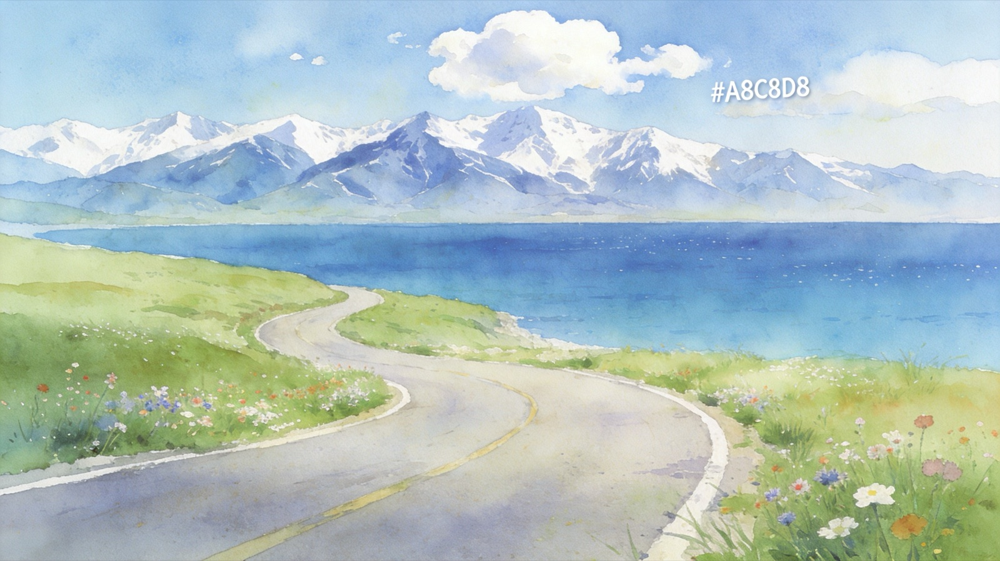
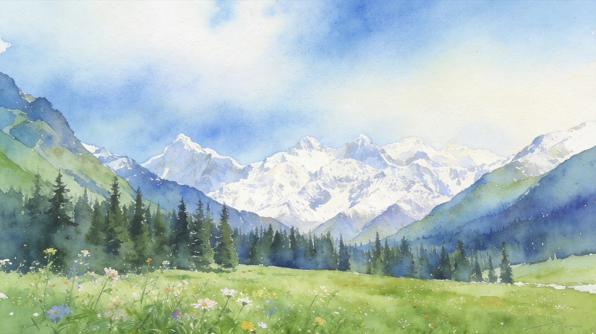
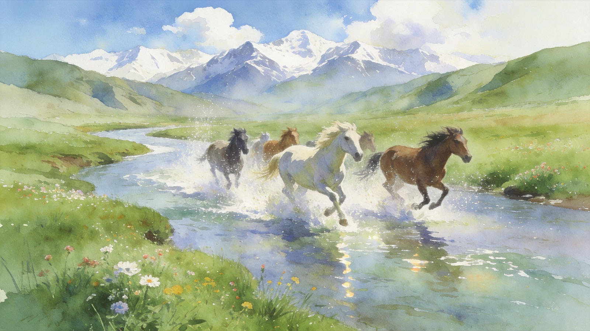
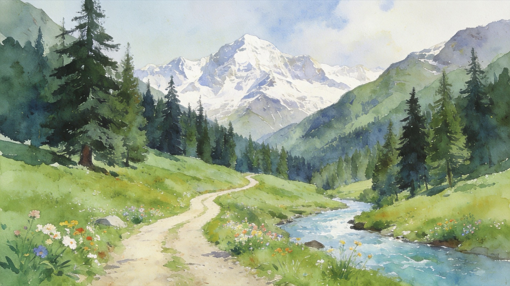
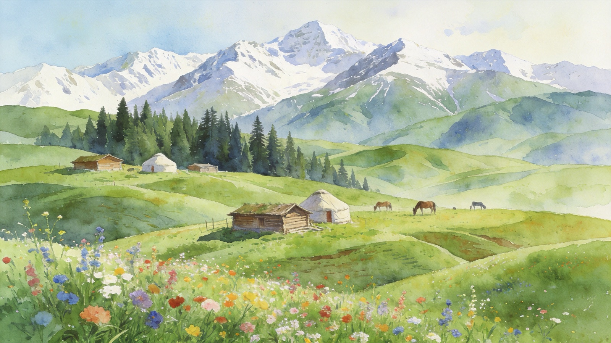
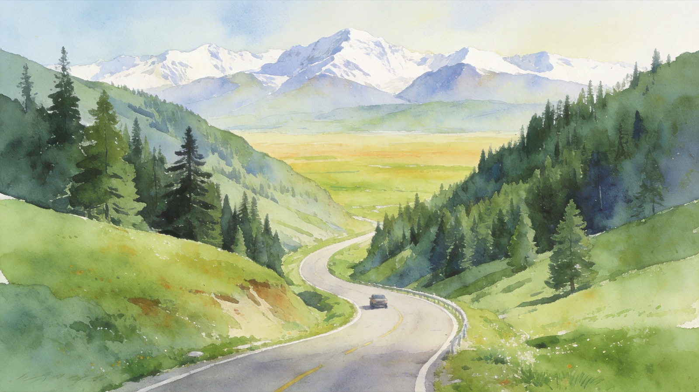
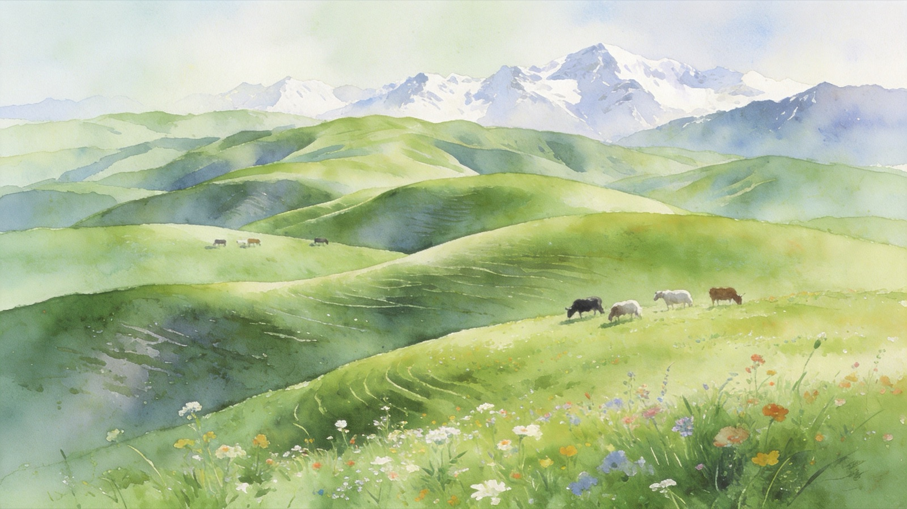
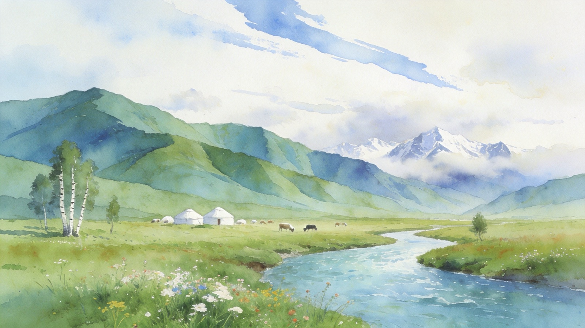
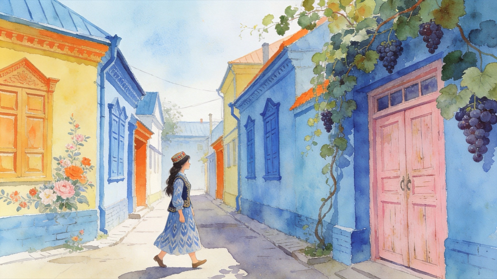

D1
DAY1

伊宁 → 赛里木湖
一脚油门驶入北疆。果子沟大桥在山间盘旋而过，转过弯口，赛里木湖蓝得不真实——这是天山的眼睛。傍晚环湖，看夕阳把雪山染成金色。

Yili Loop · 2026
天山以北，河谷草原与雪山的旅行手帐
新疆很大，相当于 9 个湖北。以天山为界，北疆是河谷草原，南疆多沙漠戈壁。初次入疆，首推北疆伊犁——那拉提、赛里木湖、伊昭公路、夏塔、琼库什台、特克斯八卦城、唐布拉百里画廊都在这条小环线上。
下面是一份 8-10 天的路线，最美的风景就在路上。


一脚油门驶入北疆。果子沟大桥在山间盘旋而过，转过弯口，赛里木湖蓝得不真实——这是天山的眼睛。傍晚环湖，看夕阳把雪山染成金色。

沿伊犁河谷一路向南，途经汉家公主薰衣草庄园。昭苏是"天马之乡"，下午去看汗血宝马，赶上周末或许能撞见"天马浴河"——上千匹骏马跃入特克斯河的壮观场面。

夏塔是一条夹在天山之间的古道，唐玄奘曾经走过这里去印度。徒步进入河谷，杉林、雪山、温泉、野花次第展开。返回昭苏可走一段伊昭公路——号称最美但最险的盘山路。

翻越乌孙山，进入隐秘的高山牧场。琼库什台是中国哈萨克族原始村落保存最完整的地方，木屋、毡房、马群散落在层层叠叠的草原上。这里手机信号时有时无——刚好让人专心看星空。

早上先逛特克斯八卦城——按周易布局的城市，从空中俯瞰是个完整的太极图。下午走恰塔环线（恰西-塔里木森林），从塔松林海一路开到开阔的草原，是路书作者最推荐的一段——感受从山谷到草原雪山的变化之美。

三个景区各有性格，按时间和兴趣挑一个。
如果时间宽裕，加一天玩两个。

北上进入独库公路的精华段。乔尔玛是独库英烈纪念地，沿途百里画廊：雪山、温泉、草原、毡房在车窗外像电影长镜头一帧帧掠过。沿途随时停车、随时拍照——这就是"最美的风景在路上"的真实写照。

收尾日。回到伊宁逛六星街——彩色俄式房屋、手风琴声、咖啡馆和馕坑并存的多元小巷。下午把车开回租车点，把行李里塞满馕、奶疙瘩、薰衣草精油带回家。